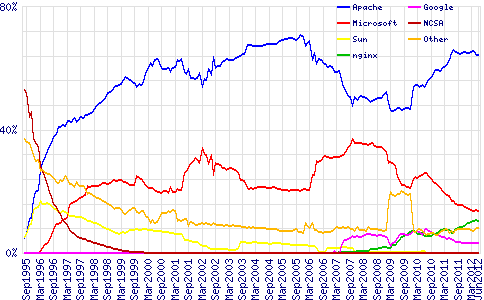
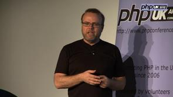
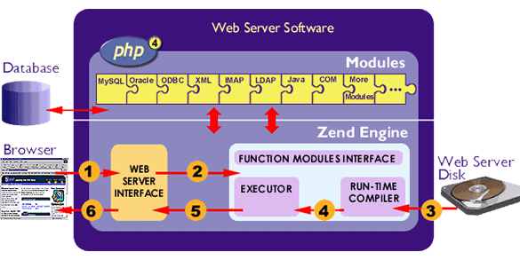

PHP est un langage de scripts côté serveur. C'est un langage
open source et multi plate-formes qui repose sur un interpréteur : le
Zend engine.
La place de PHP
PHP ("PHP : Hypertext Preprocessor") est un langage de script
exécuté sur un serveur : c'est un serveur Web qui effectue
tout le travail de traitement du script et de transmission au
navigateur du HTML standard résultant.
Le processus d'exécution d'un
script PHP est le suivant :
un navigateur demande au serveur Web l'envoi d'un fichier
avec une extension '.php'
le serveur Web appelle l'interpréteur PHP, qui lit et parse
le fichier demandé du début à la fin
les instructions dans le script sont exécutées
généralement le résultat de ces instructions est inclus
dans des instructions HTML standards.
l'ensemble du code HTML ainsi conçu est renvoyé au client
comme résultat de sa demande.
Le serveur ne renvoie que du code HTML : les commandes de
script sont exécutées et n'apparaissent pas dans le résultat. Les
utilisateurs ne peuvent pas voir les scripts qui ont créé la page
qu'ils visualisent.
Architecture client-serveur 3 tiers
PHP possède les même fonctionnalités que les
autres langages permettant d'écrire des pages Web dynamiques :
collecte de données par l'intermédiaire de formulaires, connexion à
des bases de données, envoi et lecture de cookies, accès au système
de fichiers du serveur, etc.
PHP donne accès à un grand nombre de bases de données (Adabas
D, filePro, Informix, dBase, Empress, Hyperwave, IBM DB2, Ingres,
InterBase, mSQL, MS-SQL, MySQL, ODBC, Oracle, PostgreSQL , Sybase,
etc).
PHP supporte des services utilisant les protocoles tels que IMAP, SNMP, NNTP, POP3 et
bien sûr principalement HTTP.
Les serveurs Web : en novembre 1990 naissaient au CERN
(Centre Européen pour la Recherche Nucléaire - Genève) le premier
serveur HTTP et le premier navigateur Web. Ils fonctionnaient sur le
système d'exploitation NeXTstep et s'appellaient Httpd et
WorldWideWeb. Leur inventeur était Tim Berners-Lee qui depuis
1989 menait un projet sur la mise en réseau de documents hypertextes
: le "World WideWeb". Ce premier serveur HTTP et son
premier client Web sont accessibles au CERN, en décembre, puis sur
Internet pendant l'été 1991. A partir du premier modèle
httpd du CERN, le NCSA (National Center for Supercomputing
Applications - Université de l'Illinois - USA) developpe en 1993 son
propre serveur : HTTPd. Il est abandonné en 1994,
mais ses bases servent à la création d'Apache Server en 1995,
logiciel libre et seul concurrent au produit payant Netscape
Enterprise (qui devriendra iPlanet en 1999).
Microsoft a lancé son premier serveur en 1995 avec Windows NT 3.51 :
IIS (Internet Information Server). La seconde version,
compatible avec les pages ASP sortira avec Windows NT4 en 1998.

Fig 2 : utilisation serveurs news.netcraft.com/archives/2012/06/06/june-2012-web-server-survey.html
PHP : open source et multi plate-formes

Rasmus Lerdorf PHP a été conçu fin 1994 par Rasmus Lerdorf, initialement à partir
de scripts PERL. La première version publique a été disponible en juin 1995. Elle était
composée d'un analyseur (parser) qui ne reconnaissait que quelques
macros spéciales et d'un petit nombre d'utilitaires couramment
utilisés dans les pages web.
L'analyseur a été réécrit en 1995 et devient PHP/FI Version
2 (support des formulaires HTML, laison avec la base de données
mSQL). PHP/FI Version 2 est publié officiellement en avril
1996.
En 1997 le développement du PHP devient un projet d'équipe.
L'analyseur est réécrit par Zeev Suraski et Andi Gutmans et devient
la base de PHP 3, qui est officellement publié en juin
1998.
De nombreux développeurs s'intéressent au développement de
PHP, et des changements fondamentaux sont apportés (différenciation
couche langage et couche serveur, sécurité des threads, nouvelles
librairies de fonctions, nouvelles extensions). L'analyseur est
remanié, toujours par Zeev Suraski et Andi Gutmans, et devient le
Zend Engine (www.zend.com).
PHP 4 a été publié en mai 2000.
La part de marché de PHP grandit toujours, et le langage
évolue pour donner PHP 5 qui sort en juillet 2004
après un long développement et plusieurs pré-versions. Il s'appuie
sur un nouveau moteur, le Zend Engine 2.0 avec un nouveau modèle et
des dizaines de nouvelles fonctionnalités. Cette version de PHP
implémente en particulier un modèle objet du même niveau que celui
de Java. En 2005, IBM ,SAP et Intel entrent dans le
capital de Zend Technologies, apportant un soutien de poids pour
les développements futurs.
PHP existe sous plusieurs versions suivant la plate-forme sur lequel
on veut l'installer : Linux, Unix, HP-UX, Solaris, Mac OS X,
Windows. De la même façon, PHP peut être utilisé avec divers
serveurs Web : Apache, IIS, nginx, OmniHTTPd, etc. La
configuration la plus souvent utilisée est un serveur Apache et une
machine Unix ou Linux.
Pour vos développements (écriture, test, mise au point), vous pouvez
utiliser les packages suivants : - easyPhp : www.easyphp.org
(windows) - wampServer : www.wampserver.com
(windows) - apachefriends : www.apachefriends.org
(tous les systèmes d'exploitation). Tous installent au
minimum un serveur Apache, PHP, mySQL et phpMyAdmin.
Le Zend Engine
C'est le compilateur utilisé par PHP pour produire de l'opcode
("operation code" : instructions binaires de bas niveau) qui sera
exécuté par le serveur pour produire ce qui sera envoyé au
navigateur.

Structure Zend Engine
Pour que la compilation du script ne soit pas systèmatiquement
refaite à chaque demande du script PHP, l'opcode est éventuellement
mis en cache par les extensions installées sur le serveur.